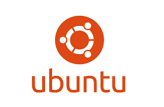
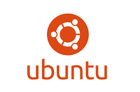

Planes
SMR
Sa Palomera
Este ciclo te enseña la base de la informática: desde montar y reparar ordenadores hasta configurar redes y sistemas operativos. Aprendes sobre hardware, software, seguridad básica y asistencia técnica. Para empezar sin conocimientos, me prepara tanto para trabajar como para seguir estudiando ciclos superiores, lo utilizare para cursar DAW

DAW
Sa Palomera
En DAW me permite en saber crear sitios y aplicaciones, con lenguajes como HTML, CSS, JavaScript, PHP y bases de datos. Aprendere tanto el diseño visual como la lógica de funcionamiento(Frontend y Backend ).
ASIR
Sa Palomera
Cursare Asir para saber administrar y mantener servidores, redes, bases de datos y sistemas informáticos complejos, tambien saber mas cosas de seguridad informática, virtualización, backups y todo lo necesario para gestionar infraestructuras IT.
IA
Sa Palomera
Ire a este curso para aprender a usar algoritmos de IA, machine learning y herramientas como Python o bases de datos NoSQL, pienso en tenr este conocimimento me podra ayudar en tner una oportunidad laboral.
...
...
Aun no tengo claro que quiero hacer, pero tengo claro que quiero seguir aprendiendo y creciendo en el mundo de la informática. Estoy abierto a nuevas oportunidades y dispuesto a explorar diferentes áreas para encontrar mi verdadera pasión.
Proyectos

Habilidades


 
